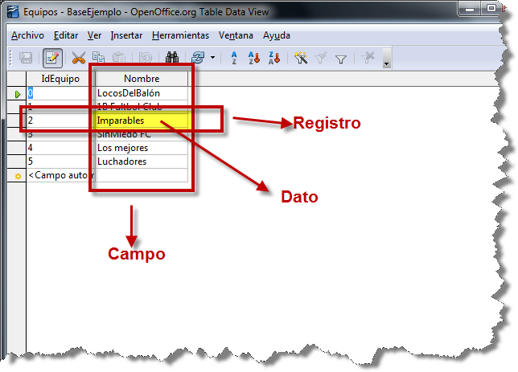
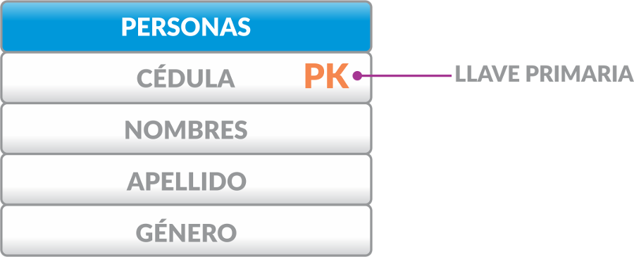
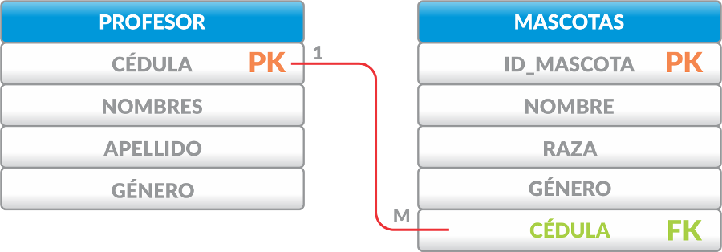
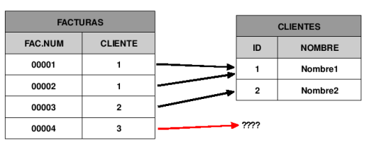
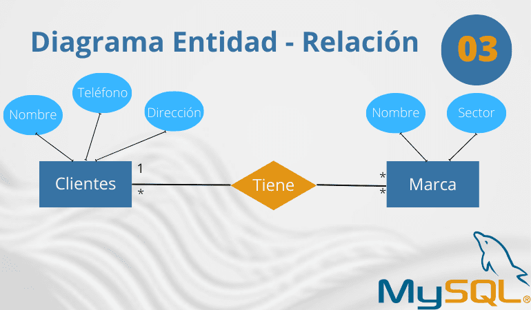
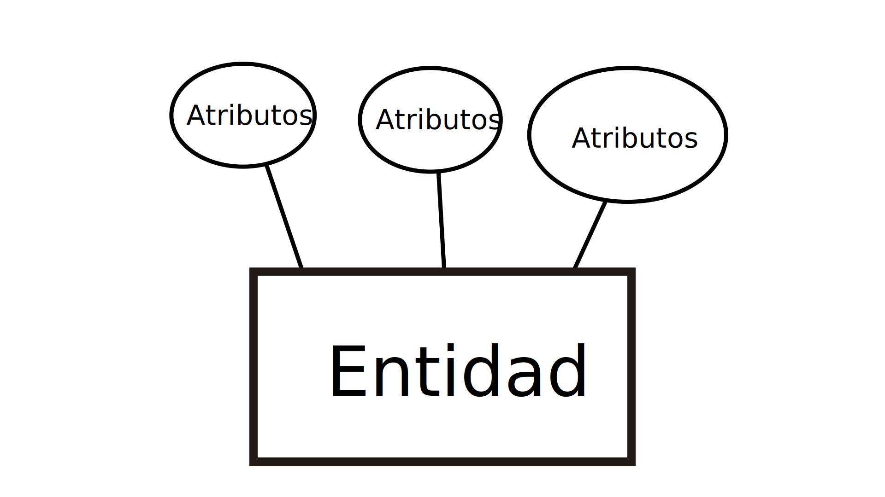
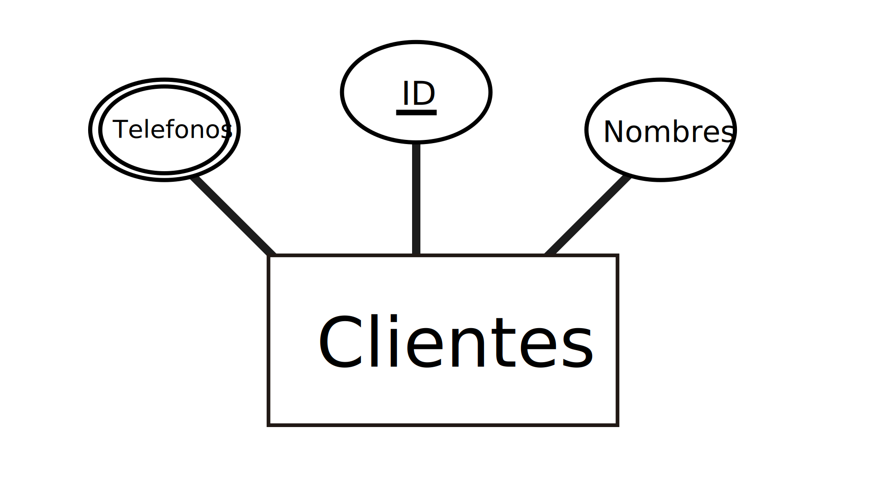

Conceptos Fundamentales de Bases de Datos
Veamos los conceptos teóricos básicos de las bases de datos usando una analogía de almacenamiento y organización de información.
-
Base de Datos:
Conjunto organizado de datos accesibles
electrónicamente, facilitando su almacenamiento y gestión.

-
Tabla:
Estructura donde se almacena la información en una
base de datos, organizada en filas (registros) y columnas (campos).

- Registro: Fila dentro de una tabla, donde cada campo tiene un valor asociado. 
- Campo: Categoría de datos en una tabla (por ejemplo, nombre, edad, etc.).
- Clave Primaria: Campo que identifica de manera única cada registro en una tabla. 
- Clave Foránea: Campo que hace referencia a la clave primaria de otra tabla, creando una relación entre ellas. 
- Integridad Referencial: Asegura que las relaciones entre tablas sean coherentes. 
-
Relación:
Conexión entre tablas, creada mediante claves
foráneas y primarias.

- Modelo ER: Modelo gráfico que representa entidades y sus relaciones en una base de datos. 
- Entidad: Objeto o concepto con existencia propia en la base de datos, como una persona o producto. 
- Atributo: Característica o propiedad de una entidad, como el nombre o la edad de una persona. 
-
Normalización:
Proceso de organizar los datos para reducir
redundancias y mejorar la integridad.


¿Qué es MySQL Workbench?
MySQL Workbench es una herramienta visual para diseñar, desarrollar y administrar bases de datos MySQL. Ofrece un conjunto de herramientas para crear consultas SQL, diseñar esquemas de bases de datos, gestionar usuarios y administrar servidores, todo dentro de un entorno gráfico intuitivo.
Interfaz de Usuario

MySQL Query Browser
Gestión de Esquemas
¡Sigue aprendiendo con más preguntas!
¡Pónte a prueba! Responde las preguntas sobre bases de datos.
1. ¿Qué es una Base de Datos?
2. ¿Qué es una Clave Primaria?
3. ¿Qué es la Normalización?
4. ¿Qué es una Clave Foránea?
5. ¿Qué es un Índice en una Base de Datos?